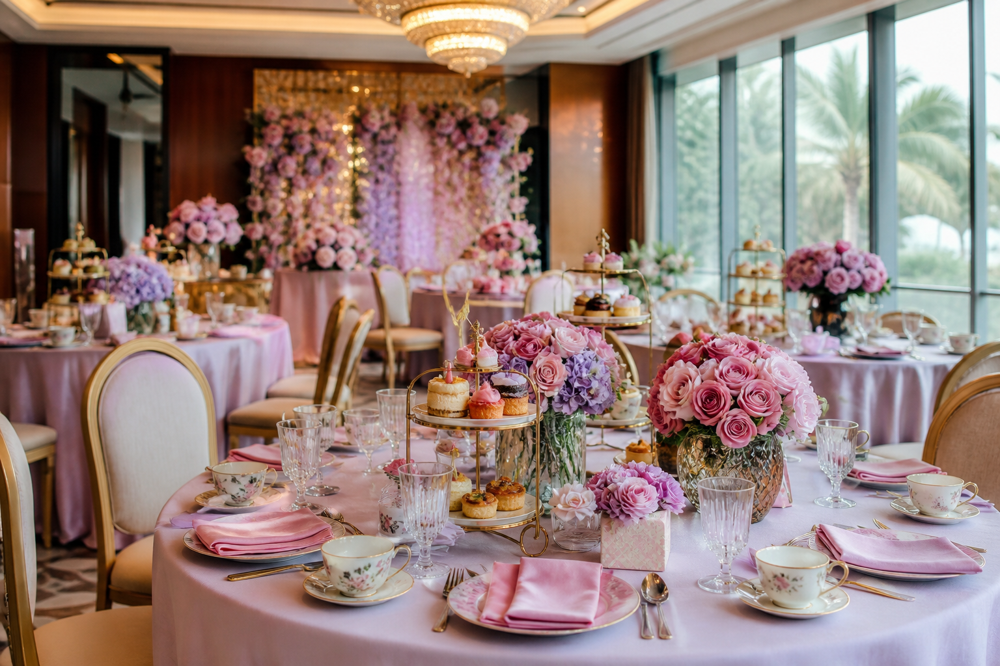
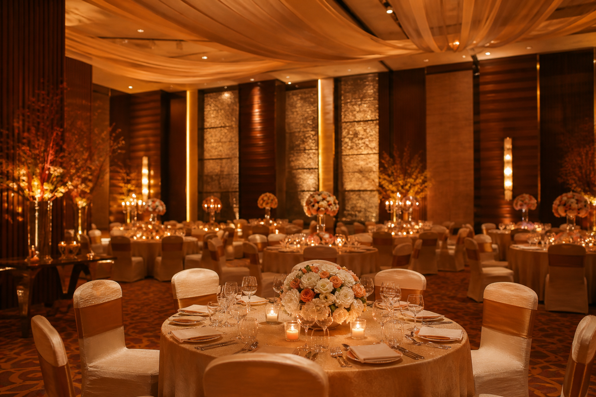

A kitty venue for every month and every mood.
Whether it's your regular monthly kitty lunch, a birthday kitty for a special member, a festive Diwali or Holi kitty, or a relaxed high-tea afternoon with the girls, Vira & Reva adapt to your group and your theme — all within the trusted comfort of Marriott hospitality in Andheri West.
Monthly Kitty Lunch
Your regular monthly kitty in an elegant private setting — space for dining, games, gift exchange and conversation. Reva is perfect for 25–40 members.
Birthday Kitty
When it's a member's birthday, make it special — cake, décor and a celebration lunch that turns the monthly kitty into a party to remember.
Festival Kitty
Diwali, Holi, Navratri and New Year kitty parties with festive décor, themed menus and a setting that matches the celebration.
High-Tea Kitty
An afternoon high-tea kitty with sandwiches, pastries, tea and coffee — a lighter, elegant option for daytime gatherings.
Games & Gifts
Flexible layouts with space for kitty games, tambola, activity tables and the gift exchange — all alongside comfortable dining seating.
Themed Décor
From floral elegance to festive colours, our décor partners style the room around your kitty's theme and palette.

A Marriott banquet hall that makes kitty planning easy.
Planning a kitty party in Andheri West shouldn't mean coordinating décor, catering and seating across multiple vendors. At Vira & Reva you get one elegant private room, in-house catering from the hotel's Pana restaurant, and a team that sets up while you and your friends simply arrive and enjoy.
- Two venues in one hotel — Reva for intimate kitty groups of 25–40, Vira for larger gatherings up to 120
- Vegetarian, Jain and High-Tea menus tailored to your group's preference
- Space for kitty games, tambola, gift exchange and activity tables
- Themed and festive décor coordination for birthday and festival kitties
- Professional service staff and Marriott hospitality standards
- Easy access from Lokhandwala, Versova, Oshiwara and the western suburbs
Everything your kitty needs, in one venue.
The right room
Reva for kitty groups of 25–40, Vira for larger gatherings up to 120 — both with flexible dining and activity layouts.
Customised menus
Kitty lunch buffet, high-tea or plated — veg, Jain and non-veg options crafted by the hotel's Pana restaurant kitchen.
Games & activity space
Flexible seating that leaves room for tambola, kitty games, gift exchange and activity tables.
Themed décor
Floral centrepieces, festive styling and birthday décor coordinated with trusted décor partners.
Cake & desserts
Coordinate a celebration cake, dessert counter and pastries for birthday and special kitties.
Service staff
Professional Marriott banquet team handles setup, service and clearing — you stay with your friends.
Food your kitty group will love.
Sample menus to help you visualise the offering. Final menus and pricing are customised to your date, group size and preferences.
Build your kitty party.
Tell us the basics and we'll send a WhatsApp enquiry to the Andheri West banquet team with venue fit, availability and a customised kitty package.
Vira or Reva — by your group size.
Not sure which room fits your kitty? A simple rule: up to about 40 members feels just right in Reva — intimate and private; from 40 to 120, Vira gives you the space for larger kitty gatherings and festival kitties. Both share the same Marriott service and catering.
Up to 40 guests. Perfect for monthly kitty groups.
Up to 120 guests. For larger and festival kitties.

"The room was beautiful, the food was delicious and the team took care of everything. Our kitty group loved it — we're booking our next month here."A recent monthly kitty in Andheri West
Questions about hosting a kitty party in Andheri West.
How many guests can I invite to a kitty party at Vira & Reva?
Reva is perfect for kitty parties of 25–40 guests, while Vira hosts larger kitty gatherings of up to 120. Choose based on your group size.
Can you arrange a kitty lunch or high-tea menu?
Yes. Kitty lunch buffets, high-tea menus and Jain-friendly options are all available, crafted by the hotel's Pana restaurant kitchen.
Is there space for kitty games and activities?
Yes. Both Vira and Reva offer flexible layouts with space for games, gift exchanges and activity tables alongside dining seating.
Can I host a themed or festival kitty party?
Yes. Themed décor, festival kitty setups (Diwali, Holi, etc.) and birthday kitty celebrations can all be coordinated with our décor partners.
Where is the kitty party venue located?
B-43, New Link Road, Andheri West, Mumbai 400053 — minutes from Lokhandwala, Versova and Oshiwara.
Let's plan a kitty party worth coming back to.
Share your kitty type, group size and food preference. Get a customised kitty package from the Andheri West banquet team.
Check My Date Call 98330 12386